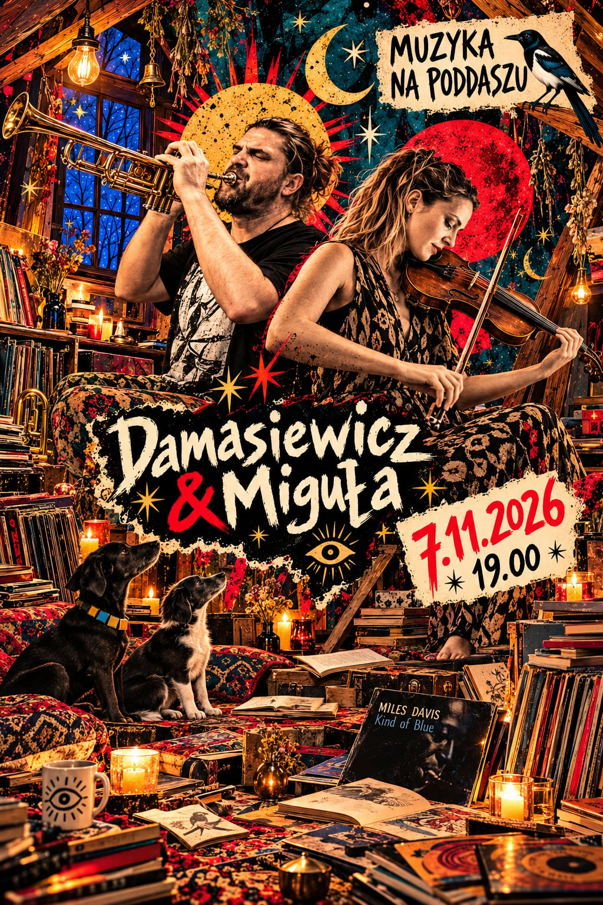

O nas — idea domowych koncertówKoncerty — kronika występówKsięga gościPrzejdź do archiwum koncertówZobacz galerię koncertówZobacz koncertyPrzejdź do aktualnej kroniki koncertówKontakt
O nas — idea domowych koncertówKoncerty — kronika występówKsięga gościPrzejdź do archiwum koncertówZobacz galerię koncertówZobacz koncertyPrzejdź do aktualnej kroniki koncertówKontaktProjekt graficzny strony głównej: w górnej ilustracji część napisów (w tym „Najbliższe spotkanie”) pozostaje elementem pierwotnej makiety. Koncert 7 listopada 2026 już się odbył; aktualne materiały są w archiwum poniżej.
O nas i o idei
„Muzyka na poddaszu” to kameralne spotkania z muzyką w naszym domu w Żyrardowie — wśród książek, winyli, przyjaciół oraz Yoko i Pixie.
Nie jesteśmy klubem ani salą koncertową. Spotykamy się blisko, bez pośpiechu, a po występie zostajemy razem jeszcze długo. Koncerty organizujemy wtedy, kiedy mamy taką możliwość i ochotę. Nie muszą odbywać się regularnie, żeby pozostały ważne.
Nasza kronika koncertów
Wspomnienia z wieczorów, które wydarzyły się naprawdę. Bez pośpiechu i bez koncertowego kalendarza.
Galeria plakatów
Plakaty naszych dotychczasowych spotkań. Zdjęcia z koncertów dołączymy, gdy wybierzemy je do publikacji.

Księga gości
Tu będzie miejsce na wspomnienia muzyków i przyjaciół, którzy odwiedzili nasze poddasze. Pierwsze wpisy dodamy po ich zebraniu i uzyskaniu zgody autorów.